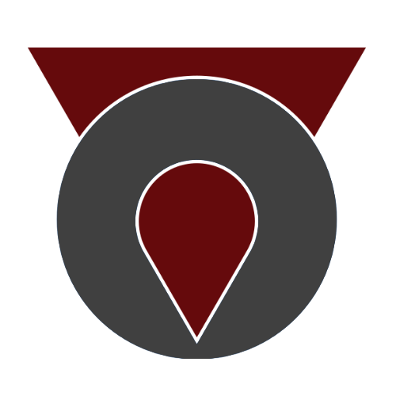

Desarrollador de Software · Especialización en Java · 5 años de experiencia
Perfil
Desarrollador de software con 5 años de experiencia en Java, mantenimiento de aplicaciones, QA y resolución de incidencias técnicas. Formación técnica combinada con experiencia práctica, aprendizaje autodidacta y voluntariados. Amplia práctica en trabajo en equipo y resolución de problemas. Capacidad demostrada para adaptarme a nuevas tecnologías, trabajar en entornos Agile y colaborar con equipos internacionales. Interés en posiciones con teletrabajo 100% en remoto, horario flexible y entorno estable. Enfocado en aplicaciones Java, desarrollo web o mantenimiento de sistemas. Apasionado por la tecnología, la música, la creatividad artística, las ciencias puras y los idiomas.
Experiencia Laboral
Capgemini, Murcia. 2020 - Presente
Indefinido desde octubre de 2020, múltiples proyectos y tecnologías abarcadas. Desarrollador de software, aseguramiento de calidad y mantenimiento de sistemas.
Ingeniería de software y desarrollo Java.
Experiencia en QA y tests automatizados.
Soporte técnico y resolución de incidencias en producción.
Mantenimiento de aplicaciones y bases de datos.
Participación en equipos Agile y comunicación en inglés y francés.
Venta y asesoramiento al cliente en productos de tecnología y gaming. Diseño ocasional de rótulos y publicidad.
Trabajo en equipo y coordinación.
Estudio de nuevos productos y tecnologías.
Infomún, El Raal, Corvera, El Palmar. 2015
Coordinador y Técnico de ALAs (Aulas de Libre Acceso).
Coordinación y supervisión de sistemas informáticos.
Enseñanza e iniciación del uso de ordenadores.
Talleres de aprendizaje de competencias tecnológicas.
Voluntariado en Onda Regional, Murcia. 2010 - 2011
Entrevistador y Colocutor. Programa Altas Capacidades, IES Saavedra Fajardo.
Educación
Desarrollo de Aplicaciones Multiplataforma, ITEP. 2019 - 2021
Ciclo de Formación Profesional, Técnico Superior. Preparación profesionales para el desarrollo, implantación, documentación y mantenimiento de aplicaciones informáticas multiplataforma, utilizando tecnologías y entornos de desarrollo específicos, garantizando el acceso a los datos de forma segura y cumpliendo los criterios de usabilidad y calidad exigidas en los estándares establecidos.
Ingeniería Informática, Universidad de Murcia. 2013 - 2017
Estudios Universitarios a tiempo parcial, grado no finalizado. Formación científica, tecnológica y socioeconómica en el ámbito de la Informática, preparación para el ejercicio profesional en el desarrollo y aplicación de las tecnologías de la información y las comunicaciones.
Curso de Instalación de Sistemas Operativos. 2015
Curso formativo impulsado por la Universidad de Murcia. Aprendizaje del proceso de instalación de sistemas operativos Windows y Linux. Ensayos de creación de particiones y arranque múltiple.
 Capgemini, Murcia. 2020 - Presente
Capgemini, Murcia. 2020 - Presente